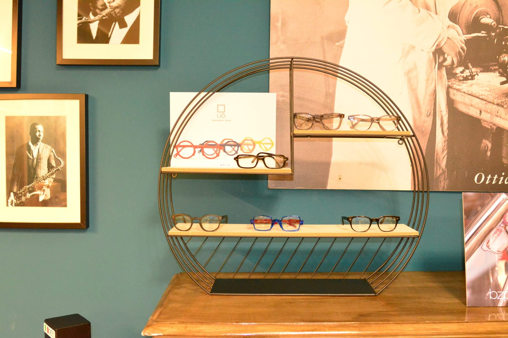

L'Occhialeria
Maestri ottici dal 1955
Via Terruggia 2 · Niguarda
Esame della vista · lenti · montature
Riparazioni in laboratorio · rate senza interessi
Toccate l'ultima riga. Qui dentro si fa lo stesso: si legge la tavola, si misura, e si cerca la lente giusta finché ogni riga è nitida.

2/10Chi siamo
Maestri ottici dal 1955.
Il negozio ha aperto nel 1955. Maurizio Bondoni ci è entrato nel 1980, da ragazzo, per aiutare il padre in laboratorio: allora le lenti erano di vetro e si lavoravano a mano prima di montarle. Nel 1986 ha preso l'abilitazione da ottico e da lì non si è più fermato.
Sulle pareti del negozio ci sono il diploma di maestro ottico e le fotografie in bianco e nero degli ottici di una volta al banco di lavoro. Non sono decorazione: sono il mestiere da cui veniamo.
- 1955apre L'Occhialeria, in Via Ornato
- 1980Maurizio entra in laboratorio col padre
- 1986l'abilitazione da ottico
3/10L'esame della vista
Quanto vedete, misurato.
Si comincia dalla tavola: leggere l'ottotipo riga per riga dice quanto vedete, e da lì si prova finché la lente è quella giusta. Non si ha fretta, e non si esce con la prima gradazione che funziona.
- Acutezza visivaLa lettura dell'ottotipo e i test per distinguere forme, dimensioni e colori, con la strumentazione del negozio.
- Con i medici oculistiSe serve un approfondimento, lavoriamo insieme agli oculisti: l'ottico misura, il medico cura.
- Lenti a contattoPersonalizzate o monouso, con i test prima dell'applicazione e le istruzioni per metterle, toglierle e tenerle pulite.
4/10Le lenti
La lente giusta, non la prima.
In organico o in vetro minerale, sferiche, asferiche o personalizzate sulla misura del vostro occhio: la differenza si sente sul naso e si vede ai bordi.
Sferiche
La lente classica: affidabile, per le gradazioni semplici.
Asferiche
Più sottili e piatte, con meno distorsione ai bordi e un occhio più naturale dietro la lente.
Personalizzate
Calcolate sulla vostra montatura e su come la portate: la lente più precisa che si possa fare.
-
E poi
ProgressiveVicino e lontano in una lente sola, con l'abitudine che si prende in pochi giorni.Organico o mineraleLeggero e resistente il primo, più duro ai graffi il secondo.Filtro luce bluPer chi passa la giornata davanti a uno schermo.Sole graduatiLa vostra gradazione anche nella lente scura.
5/10Le montature
Dieci marchi che non trovate ovunque.
Montature in titanio, acetato, metallo, legno, combinati: quasi tutte di piccoli produttori italiani ed europei, scelte una per una. Il colore, il materiale, la calzata e la forma del viso si guardano insieme, davanti allo specchio.
- LiòMade in Italy: un artigiano che lavora rame, metallo, acciaio e plastica.
- UnseenOgni telaio è fatto a mano.
- Les Pièces UniquesPezzi unici italiani, fatti a mano, raffinati e informali.
- Woodys BarcelonaDall'acetato a vari tipi di legno, al metallo.
- BdoNato da una famiglia di ottici italiani.
- Madison AvenueStile moderno e metropolitano, ispirato a New York.
- BzpLinee retrò, dagli anni Settanta americani.
- Charlotte EyewearLinee pulite e design minimale.
- Club HouseCollezioni giovani, fresche e personalizzabili.
- IconDa sole e da vista, un riferimento del settore.
Anche montature per bambini e occhiali da sole, graduati o no.
6/10Il laboratorio
Montaggio e riparazioni, sul posto.
Il laboratorio è dove tutto è cominciato nel 1980, con le lenti di vetro. Oggi ci si montano e centrano le lenti, si sostituiscono nasali e aste, si rimettono in sesto le montature che si sono piegate o rotte.
Se gli occhiali sono quelli che usate per guidare o per lavorare, ditecelo: chi è passato di qui racconta di lavori pronti in meno di un giorno.
12mesi senza interessi
7/10A rate
Il prezzo resta quello.
Occhiali e lenti si possono pagare in dodici mesi senza interessi: il costo è quello del giorno dell'acquisto, fino all'ultima rata. Si decide in negozio, in cinque minuti.
8/10Chi ce l'ha detto
Quello che raccontano i clienti.
- La competenzaÈ la parola che torna più spesso: le prove fatte con calma, la lente trovata dopo un'esperienza andata male altrove, le progressive che finalmente funzionano.
- Il consiglioScegliere la montatura insieme, tenendo conto dei gusti e di come si vive, senza spingere.
- MaurizioLo chiamano per nome. Famiglie intere che vengono qui da anni, e chi è entrato per una montatura rotta ed è rimasto cliente.
Leggi tutte le recensioni su Google«Il lavoro è stato eseguito in neanche 24 ore»
9/10Dove e quando
All'angolo con Via Ornato.
Via Giovanni Terruggia 2
20162 Milano · Niguarda
Dal 1955 in Via Ornato; oggi a pochi metri, all'angolo, in Via Terruggia 2. Il lunedì apriamo solo il pomeriggio.
- Lunedì solo il pomeriggio, dalle 15:30.
- Domenica chiusi.
| lunedì | 15:30 – 19:00 |
|---|---|
| martedì | 9:30 – 12:30 · 15:30 – 19:00 |
| mercoledì | 9:30 – 12:30 · 15:30 – 19:00 |
| giovedì | 9:30 – 12:30 · 15:30 – 19:00 |
| venerdì | 9:30 – 12:30 · 15:30 – 19:00 |
| sabato | 9:30 – 12:30 · 15:30 – 19:00 |
| domenica | chiuso |
La mappa è di Google: aprendola, Google riceve il tuo indirizzo IP e può usare i suoi cookie.
10/10Domande
Quello che ci chiedono spesso.
Dove si trova L'Occhialeria?
In Via Giovanni Terruggia 2, all'angolo con Via Luigi Ornato, nel quartiere Niguarda di Milano (CAP 20162).
Fate l'esame della vista?
Sì: controllo dell'acutezza visiva con la lettura dell'ottotipo e strumenti dedicati. Per gli approfondimenti collaboriamo con medici oculisti.
Riparate gli occhiali?
Sì, in laboratorio: montaggio delle lenti, centratura, sostituzioni e riparazioni delle montature. Portateceli, senza appuntamento.
Si può pagare a rate?
Sì, in 12 mesi senza interessi: il prezzo resta quello del giorno dell'acquisto fino all'ultima rata.
Che orari fate?
Lunedì 15:30–19:00; da martedì a sabato 9:30–12:30 e 15:30–19:00. Domenica chiusi.
Applicate le lenti a contatto?
Sì, personalizzate e monouso, con i test prima dell'applicazione e le istruzioni per la gestione e la manutenzione quotidiana.